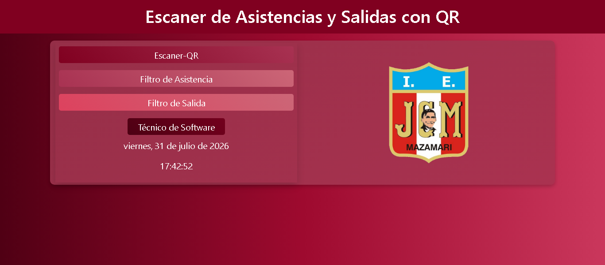
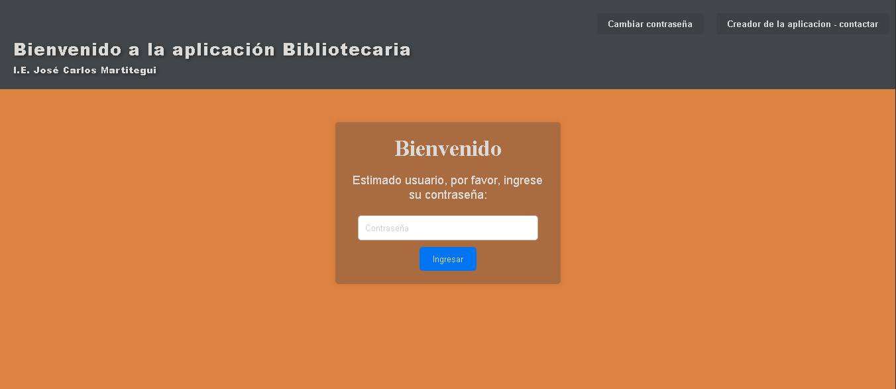
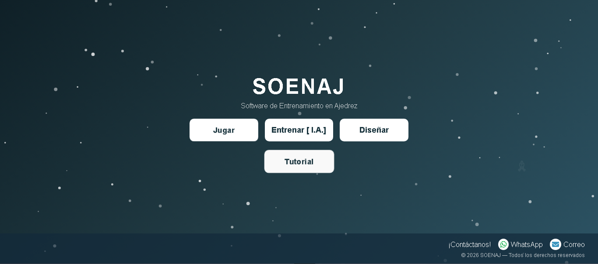
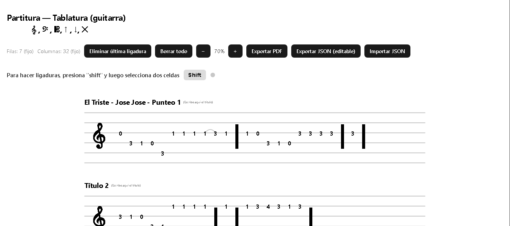

GABRIEL ARTURO
CARRION ROSAS
Técnico Egresado en Ingeniería de Software con IA
Bienvenido a mi portafolio profesional.
Descargar CVSobre mí
Técnico egresado de SENATI en Ingeniería de Software con Inteligencia Artificial, con conocimientos en desarrollo web y bases de datos.
Durante mis prácticas profesionales participé en el desarrollo de un sistema de asistencia mediante códigos QR para la Institución Educativa JCM de Mazamari, empleando HTML, CSS, JavaScript, PHP y MySQL.
También he creado proyectos personales, como un sistema de ajedrez, aplicaciones musicales virtuales y un editor de partituras para guitarra, aplicando principios de programación, diseño y desarrollo de software.
Educación
TÍTULO A NOMBRE DE LA NACIÓN
Ingeniería de Software con Inteligencia Artificial.
SENATI
Descargar CertificadoCERTIFICADO DE APROBACIÓN DE CURSO/MÓDULO
Arduino Básico.
SENATI - Programa Nacional de Informatica
Descargar CertificadoCERTIFICADO DE APROBACIÓN
Inglés - INTENSIVE BASIC
SENATI - Programa Centro de Idiomas
Descargar CertificadoCERTIFICADO DE PRÁCTICAS PRE-PROFESIONALES
Prácticas Preprofesionales en Ing. de Software e I.A.
I.E. "José Carlos Mariátegui" - Mazamari, Satipo
Descargar CertificadoProyectos

Sistema de asistencia QR
Desarrollado para la IE José Carlos Mariátegui de Mazamari.

Sistema Bibliotecario
Desarrollado para la IE José Carlos Mariátegui de Mazamari.

Sistema de ajedrez
Desarrollado como proyecto personal.

Sistema para partituras en Guitarra
Desarrollado como proyecto personal.
Contacto
Correo: carriongabriel10@gmail.com
Teléfono: 929154777
LinkedIn: https://www.linkedin.com/in/gabriel-arturo-carrion-rosas/